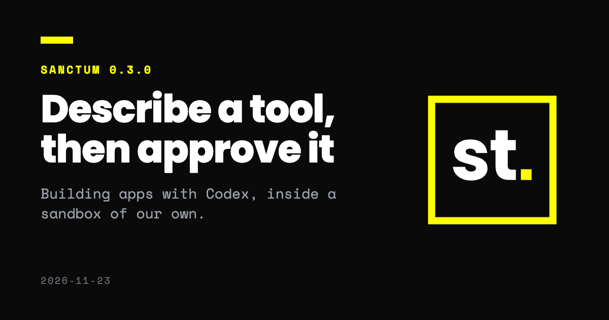

November 23, 2026
Describe a tool, then approve it

Most of the tools people run in Sanctum were written by a model in the first place. Someone asks a chat assistant for a small converter or a checklist, copies the HTML it produces into a file, and drags that file into Sanctum. The round trip works, but it puts the least careful step, copying code out of a chat window, in the middle of the process.
Sanctum 0.3.0 removes that step on macOS. You describe the tool in plain words, OpenAI's Codex writes it on your computer, and Sanctum shows the result in a preview window. When you are satisfied, the tool goes through the same approval screen as a file you dragged in. The feature is off until you turn it on in Settings, and the rest of this post explains what changes when you do.
What is sent where
Turning the feature on and signing in does three things, and nothing happens before you do:
- Sanctum downloads Codex from OpenAI's releases on GitHub and checks it against a hash built into Sanctum. Codex is open source under the Apache License 2.0, and Settings shows its licence.
- You sign in with your own ChatGPT account in your browser. Sanctum never sees your password or sign-in token, and the sign-in page must be on
auth.openai.combefore Sanctum will open it. - Your messages and the drafts Codex writes are sent to OpenAI, and the work counts against your ChatGPT plan's usage limits. Sanctum itself sends none of it, and there is still no Sanctum account and no telemetry.
Delete agent data, also in Settings, signs out, stops Codex and removes the program, the sign-in, the conversations and the drafts from your computer. Tools you already added to your library stay where they are.
What Codex can reach while it works
A coding agent reads and writes files and runs commands, and the model behind it can be steered by anything it reads, including the tool it has been asked to change. We therefore treat every command Codex runs as untrusted.
Codex normally runs its commands inside a sandbox of its own. macOS cannot place one sandbox inside another, so Sanctum replaces it with a stricter sandbox around the whole Codex process, built on the same macOS mechanism. Inside it, the following limits apply:
- Commands can read system folders, the Codex program and the draft, and nothing else in your home folder, such as your shell settings or SSH keys.
- Commands can write only to the draft's folder and to Codex's own working folder, where the files that control Codex's behaviour are protected from writes.
- Commands reach no network at all. Codex itself reaches only
chatgpt.comandauth.openai.com, through a proxy inside Sanctum that checks each connection comes from the Codex process. - Commands cannot start programs outside the sandbox, read the clipboard or open the keychain, because only seven named system services are reachable.
Each of these limits has a test that runs the real Codex program and tries to break it. The security review for 0.3.0 lists what we checked, what we found and fixed, and the risks we accepted. It is a review by the people who wrote the code, not an outside audit.
Because the second sandbox exists only on macOS so far, building apps is offered on macOS only. On Linux and Windows, Settings says it is not available yet, and nothing is downloaded.
What the finished tool may do
A tool Codex writes is a single HTML file like any other, and Sanctum treats it the same way. The scanner lists what it asks for, you approve or refuse each item, and the tool starts with nothing approved. Its card is marked "Made with Codex" so that you can tell it apart from a tool someone signed. Nobody has reviewed it, and the mark does not claim otherwise.
You can return to a tool later with Modify with Codex, which opens the Create window with the tool as its starting point. Every draft is kept in a history, so an earlier version can be previewed or restored, and standing instructions let you set rules that apply to every tool Codex writes for you.
Also in 0.3.0
Registry notices tell you when a tool you installed has a newer version or has been withdrawn by its registry. A withdrawn version from a registry built into Sanctum no longer opens. Tool windows can also save files to your Downloads folder, never over an existing file, and programs and scripts are refused. The changelog has the full list.
Sanctum 0.3.0 is available from the download page, and installed copies will offer the update. We would like to hear what you build with it, and what you would want it to refuse, at ultra@enigma.sh.